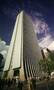
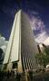

Post
UNDUMATHETC-UNDMA SE EXPANDE A COMUNIDADES ALEJADAS
UNDUOPERATION-UNDPE OFICIALIZA SU PARTICIPACIÓN ES LAS ESCUELAS DE LATINOAMERICA
UNDSOCIALNT-UNDSO
DICIEMBRE 2025
o La enseñanza a los niños sobre el medio ambiente y la conservación de los recursos naturales. es de suma importancia para que los niños sean capaces de comprender y aceptar que el medio ambiente es una parte importante de su vida y que deben respetarlo. en usd propiciamos por medio de nuestros proyectos una correcta valoración a lo que son los ecosistemas, los arboles, los recursos hídricos, la vida silvestre, la biodiversidad, el medio ambiente, las comunidades, las culturas y las tradiciones de los pueblos indígenas y de todos los pueblos de cada región en el mundo. El desarrollo personal es la capacidad que tiene el ser humano de desarrollar las habilidades, las destrezas y las capacidades que le permitan ser una persona mejor en todos los aspectos de su vida. En usd propiciamos un mejor desarrollo por medio de potenciar las habilidades blandas de nuestros integrantes, como la creatividad, la inteligencia emocional, la inteligencia social. El poder explorar sus áreas de desempeño y de aprendizaje y poder desarrollar su potencial. Sean ingenieros, físicos, médicos, desarrolladores de software, psicólogos, estudiantes. Centramos en la mejora a que educamos ciudadanos del futuro, aptos para llevar la raza humana hacía delante. Haciendo énfasis por su desarrollo personal, aptitudes e intereses, haciendo énfasis en su potencial.
UNDSOCIALNT
Nuestro propósito principal es llevar la humanidad hacia delante, por medio de los avances científicos y tecnológicos. Centramos nuestro trabajo desde los sismos, que son generados por ondas sísmicas, las cuales se propagan en la corteza terrestre y son generadas por agentes externos tales como la erupción volcánica, la actividad tectónica, la actividad sísmica, el movimiento de placas tectónicas, la actividad humana, etc. De ahí vamos a las consecuencias que pueden traer estos sismos, que son diferentes en función de la intensidad del mismo, estas son:
1. Tsunamis
2. Terremotos
3. Erupciones volcánicas
En las cuales se daña el medio ambiente y se pierden vidas humanas, y es aquí donde entran en acción nuestros equipos de rescate. De socialización, ejecución, unión y creación de una red de voluntarios que ayuden a la humanidad en estos casos de emergencia. Esa red de voluntarios es nuestro centro de conferencias UNDSOCIALNT, donde se encuentra diferentes profesionales de diferentes ramas de la ciencia y tecnologia, donde se coordinan para dar una solución a todas las situaciones de emergencia.
-
PROXIMOS EVENTOS

UNDSOCIALNT-undso
FEBRERO 6, 2025 -
POST MÁS RECIENTES
-

PRIMERA INTERACCIÓN REAL ZP-001
NOVIEMBRE 23, 2023 -

EXPANSIÓN GLOBAL
NOVIEMBRE 27, 2023
-
